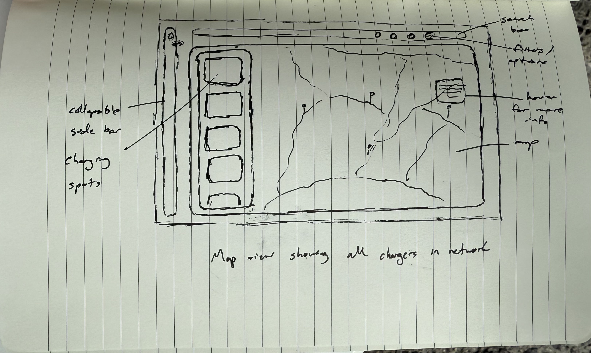
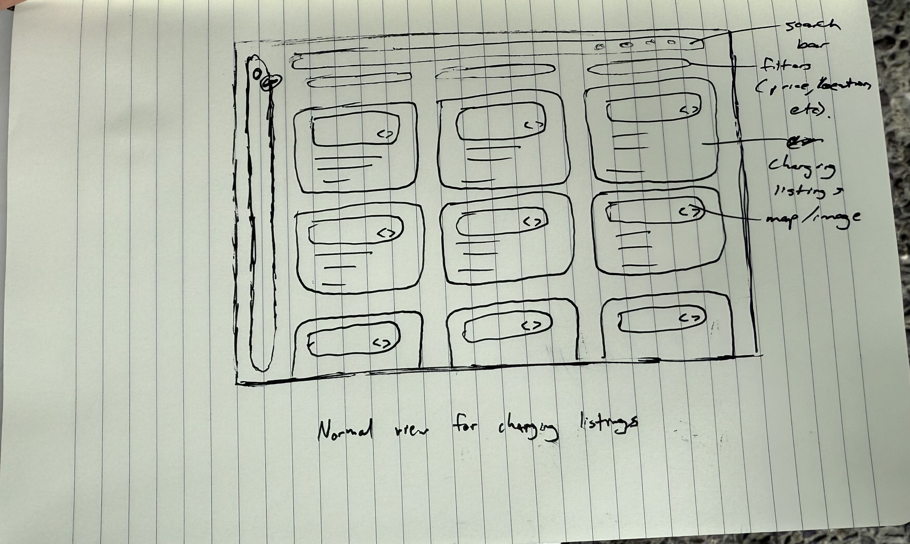
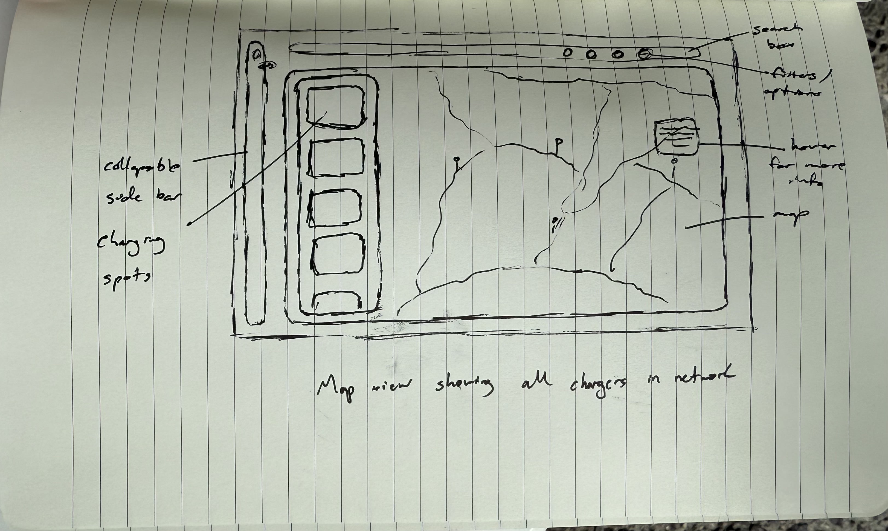
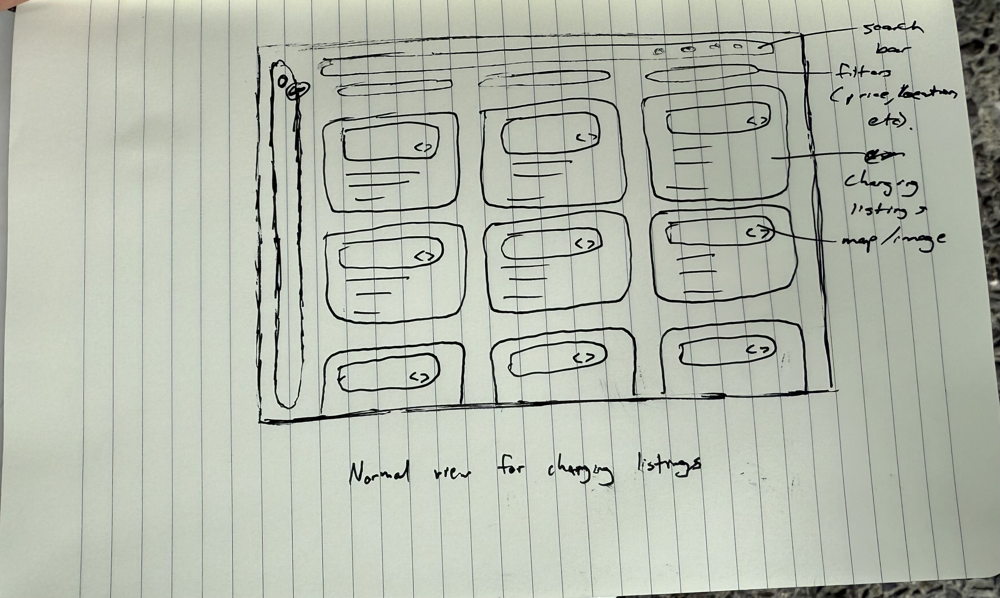

Iterative Redesign & Evaluation
Ethan Wei ● Sarah Ridley ● Priyam Parekh ● Zeeshan Bhalwani
Brown University ● April 2025
Introduction
Curo
In this case study, we developed our design and critique skills by iteratively creating digital interfaces for a Y Combinator startup called Curo. Curo's mission is to connect electric vehicle (EV) fleet managers and charger depot owners to take advantage of charger downtime.
For example, imagine a regional manager of Amazon's electric delivery vehicles, who has doesn't have enough chargers for their whole fleet and doesn't want to build more. Imagine also a grocery store owner whose parking lot has many EV chargers that aren't used overnight while the store is closed. These parties can find one another Curo for mutual benefit: the fleet manager finds affordable, reliable charging spots and the depot owner makes money from leasing their chargers at odd hours.
Approach
Throughout the design process, we avoided looking at any of Curo's real interfaces, so that our approach to solving their problem would be completely independent from theirs. After we understood their mission, we began by drawing sketches depicting our initial ideas of desktop and mobile interfaces, and then turned these sketches into lo-fi wireframes. Next, we did a critique of our wireframes and created a hi-fi prototype in Figma, which we tested with users. Each of these steps will be discussed in the below sections.
Initial Sketches and Ideation
Sketch Behind The Scenes
• To design Curo's platform from the ground up, each team member independently sketched out their vision for the UI. We each created three sketches, exploring different screen views and formats (desktop vs. mobile).
• By working independently, we generated a diverse set of design ideas, each offering a unique approach to presenting Curo's core functionality. Furthermore, we restrained from looking at current Curo designs to form original sketches and designs. This ultimately enabled us to add our own perspective and personalization to the sketches/lo-fi prototypes.
• These sketches allowed us to consider a range of user interactions and layouts before converging on shared design elements.
• This initial ideation phase laid the foundation for our lo-fi wireframes and informed key interface decisions moving forward.
Sarah's sketches
When designing my 4 screens, my main goal was to display the core of the initial flow for desktop users. The first screen allows users to sign up as either of the two user groups, and then there is one screen for the fleet managers and two screens for the depot owners (which I initially called charger owners). The screen for the fleet managers displays the page where they can manage the chargers they have leased, whereas the depot owners' pages allow them to manage their chargers and view their leasers.
Ethan's sketches
I wanted to sketch designs that were mostly centered around the driver and fleet manager. Thus, I sketched three screens that were reminiscent of mobile maps apps like Google Maps but with additional features like pinned locations for all the charging stations. I also added more tabs like a vehicle tracking page and a charging details page so that fleet managers could easily gather insights on all of their vehicles.
Zeeshan's sketches
When designing the screens, my main goal was to display the flow for mobile uses. The first screen is a simple way for users to sign into the app. The second screen allows the fleet manager to easily search for different chargers compatible with their fleet. The last screen allows a depot owner to see all of their chargers and decommission them from the platform if there may be an issue.
Priyam's sketches
 



When designing my three screens, I focused on both fleet managers and depot owners, since Curo's platform fundamentally serves as a marketplace between these two user groups. The first screen is a map view that helps fleet managers search for and locate available chargers. It features a central map with a scrollable overlay of charger listings on the left, a search bar at the top, and a collapsible vertical navigation bar on the far left. The second screen is a standard card view that removes the map but retains all other functionality, allowing fleet managers to quickly scroll through all chargers available to lease. The third screen is targeted toward depot owners and showcases the signup process to add an EV charger to the platform. This includes fields for contact information, charger type, quantity, and location details.
Lo-Fi Prototypes and Wireframes
Wireframes Behind The Scenes
• To design a lo-fi prototype for Curo's platform, each team member independently created a wireframe for the pages we believed to be necessary for the platform. We all focused on a page that would be an important step in the user's journey as a Fleet Manager and EV Charger Depot Owner.
Screen 1: Sign-In/Sign-Up Page
• The goal for this page was to create an intuitive way for Fleet Managers and Depot Owners to sign in or create a new account.
• A simple card layout with options for each stakeholder to Sign-In or Sign-Up was utilized to make Sign-In and Sign-Up relatively easy.
Screen 2: Fleet View Page for Fleet Managers
• The goal for this page was to create a simple yet comprehensive view for Fleet Managers to be able to locate their fleet and check on its charging status.
• A view inspired by Airbnb was used as an efficient way for Fleet Managers to be able to view their vehicle's location on a map and a sidebar with cards detailing vehicle information such as charging status and cost.
Screen 3: Charging Options Page for Fleet Managers
• The goal for this page was to create a simple yet comprehensive view for Fleet Managers to be able to locate chargers nearby them and see if those are compatible with their fleet and reserve them.
• Once again a view inspired by Airbnb was used as an efficient way for Fleet Managers to be able to locate chargers on a map and a sidebar with cards detailing charger information such as cost and charging speed. We also wanted to maintain consistency with the Fleet View Page by using a similar sidebar and map design.
Screen 4: Dashboard Page for Fleet Managers
• The goal with this page was to create a simple dashboard with quick actions and all the information that a EV charger owner would need to manage their depot.
• We chose to use a Bento Grid layout to allow for a clean and organized view of the information. Some of the cards are clickable and allow the user to view more information about their depots or reservation requests.
• We chose to keep the earnings in the center as this one of the most important pieces of information for the depot owner so they can see how Curo is benefitting them.
Our Feedback to Each Other
• Adding a robust messaging functionality would greatly improve communication between fleet managers and depot owners. While phone contact was appreciated, in-app messaging needs to be more visible and intuitive to support real-time coordination and trust-building.
• Making the sidebar collapsible could enhance usability by giving users more space to view critical information—especially helpful when managing multiple reservation requests or comparing depot data. This small change could improve overall clarity and reduce the need for excessive scrolling.
• For the hi-fi prototype, we suggest introducing mirrored views for depot owners that align with what fleet managers currently see in Screens 2 and 3. This would support consistency across roles, help users quickly understand the platform, and reduce the learning curve for first-time users.
• As we continue refining the user experience, it's important to surface key decision-making data—such as charging slot availability and total reserved slots—early in the user flow. Doing so empowers users to act with confidence and minimizes hesitation during critical steps like accepting or rejecting a request.
Feedback From TA
• Maintain consistent design patterns across all screens to improve user familiarity.
• Incorporating filtering capabilities into the search experience for both fleet managers and depot owners would significantly enhance usability. Allows for faster decision-making and makes the interface feel more responsive to user intent.
• Consider reorganizing the dashboard layout into a more compact, evenly spaced grid. Extra whitespace can give the impression of an incomplete design.
• Adding short, contextual descriptions to wireframes would clarify the purpose of each section and guide both users and stakeholders through the interface. It ensures the intent behind each component is clearly communicated.
All of the above feedback was implemented. Please see the Hi-Fi prototype below for more info!
Hi-fi Prototype
Figma
In our hi-fi prototype, we focused on building a unified brand identity for Curo while ensuring adherence to best practices in UI/UX design.
We began by reviewing our Balsamiq lo-fi prototype and TA feedback to clarify our direction moving forward. Our TA, Audrey, emphasized improving the information hierarchy—specifically, where and when information is presented to the user. She felt that we could enhance the experience by displaying more information upfront, reducing the number of clicks required to access key details. We balanced this feedback with our belief in maintaining a more minimal interface until the user actively seeks additional information through interaction.
Ultimately, we retained most of our initial wireframe designs but added a few key details that would be useful for most users, separating them from the more comprehensive information available through card clicks. We also ensured visual and informational consistency across personas, making the interface more intuitive for both fleet managers and depot owners. Additionally, we added several features we felt were essential to the core product—most notably, the messaging page.
Loom Demo Video
As you can see from the demo and Figma, at the core of our UI is an onboarding flow that diverges based on user persona. We were inspired by marketplace platforms like Fiverr, which use a similar approach to create a simple and navigable user experience.
Depot owners are presented with a clean dashboard as their home screen, featuring clickable cards that reveal more information. From this dashboard, they can accept or reject reservation requests, edit their depot availability, and track depot statistics. They can also message fleet managers and manage communications through a dedicated messaging tab. While we designed both reservations and billing tabs, we chose not to implement those pages, as they would be relatively simple screens—one featuring a calendar view and the other a form.
For fleet managers, the UI is much more map-focused. Their homepage displays a map view of open charging locations, encouraging them to make reservations. They also have a tab for tracking their vehicles and current reservations, which mirrors the homepage's map view to maintain visual consistency. Lastly, we designed a messaging page for them as well, enabling negotiations and communication with depot owners.
User Testing
User Testing Behind The Scenes
• Conducting usability tests with real users completing a core, multi-step task on your interactive hi-fi prototype is essential for gathering meaningful feedback and evaluating the app's primary functionality. Our objective was to have users log in as a depot owner and complete the core task of accepting a reservation request.
Questions We Asked Our Users
Before the usability test:
• What would you typically expect from a sign-in experience?
• As a depot owner, what information and steps would you expect to see when accepting an EV reservation request?
After the usability test:
• Was there anything confusing about where to find your reservation requests? Did you have a hard time finding where it was displayed?
• Did you feel like you had adequate information on the request details to make a decision on whether to accept or decline?
• Was it intuitive to know where to get more information or communicate with the fleet manager that requested?
• How confident are you that this reservation will be respected by the other party?
• How similar was the experience to what you expected? Do you think the differences were good or bad?
Insights from Zeeshan's User Test
Observations:
• In the pre-interview questions, the interviewee shared that they expressed this process to be straightforward like any other sign-in process.
• The user was able to navigate the interface with relative ease and clicked on the first available request.
• The reservation request process was seen as straightforward and well-contextualized.
• There was some uncertainty about the number of available charging slots and the the in-app messaging feature was not immediately discoverable
• The user clicked on the first available request and took time to review the request details.
• The user mentioned that the experience matched expectations and nothing was very confusing during the task.
Insights:
• Visibility of critical information (slot availability and reservation impact) is key for confident decision-making.
• Users expect transparent, easy-to-read summaries of reservation requests.
• Quick access to communication tools like messaging is highly valued and could be built into the reservation request popup.
• Clearly showing total available vs. requested slots can reduce cognitive load for the user and make the experience more efficient.
• New users will benefit from guided cues/prompts to avoid missing essential context before confirming actions.
Insights from Sarah's User Test
• placeholder
• placeholder
• placeholder
• placeholder
Insights from Priyam's User Test
Observations:
• In the pre-interview questions, the interviewee shared that he expected a sign-in process to be straightforward, requiring only a username and password.
• He immediately selected the option to log in as a depot owner—skipping the fleet manager option and the sign-up flow.
• Upon trying to click into the username field with no response, he instinctively clicked the login button, which aligned with the intended flow for our UI.
• Once on the dashboard, he scanned and read out each of the cards and information and was quickly able to locate the Reservation Request Card.
• He clicked on the first available request.
• However, he did not spend much time reviewing the detailed information in the card and instead clicked "Accept" almost immediately.
• After the usability test, when asked further questions, he mentioned that the experience matched his expectations and that he didn't encounter anything confusing or difficult during the task.
Insights:
• The main limitation of this user test was that the subject was instructed to accept a reservation request.
• Because of this, he did not feel the need to thoroughly review the reservation's content, knowing that the task had a pre-determined flow.
• However, this usability interview confirmed that the flow to locate and accept a reservation was intuitive and easy to follow, indicating that the basic functionality was accessible and understandable to first-time users.
Insights from Ethan's User Test
Observations:
• The user was able to find the reservation request card and accept the reservation, but did not immediately see the reservations part of the dashboard.
• The user expected more information about the reservation request in the pre-interview than they were able to find in the actual product.
• They user scrutinized the reservatio details to ensure that they fully understood the nature of the reservation before accepting it.
Insights:
• Some depot owners might need more infromation or context about the reservation before accepting it. We should implement direct messaging from the reservation request page.
• If we want to optimize for number of reservations accepted, we should make the reservation request card more prominent on the dashboard.
• Users could be unsure about their decision; we should allow them to edit their response or cancel the reservation after accepting it.
Lessons Learned
Throughout working on this case study, we each gained skills and experiences important to interaction designers, enumerated below.
• Sarah: First, I significantly improved my prototyping skills in Figma. More broadly, I learned how important it is to be specific with prompts when performing user tests. Not only do you need to present the subject with the task, you also need to ask them to assume the mindset of someone that they're not. In this case, if I had told my subject to be a depot owner who needs to decide whether or not to accept the reservation request (instead of just telling them to accept it), I could have gauged whether there was sufficient information rather than just the fact that the task was possible.
• Priyam: Going from hand-drawn sketches to lo-fi and then eventually to hi-fi Figma designs was incredible insightful. The sketching process allowed me to think freely about how to structure information on the page and discover the ideal user experience for both stakeholders. Furthermore, the ability to discuss my thought process with my team and learning about their perspective allowed for a thoughtful feedback loop. Working in a team also emulated a real-world task where you work with other team members to go from ideation to an actual design/product.
• Ethan: This project taught me a lot about staying agile in the design process. Rather than dive head-first into a solution, taking time breaking the problem down into stakeholders and their needs gave us a solid foundation to design features without feeling like we weren't comprehensive. In addition, I learned important Figma and Balsamiq prototyping techniques, including making component states in Figma and using multi-page prototyping features. This experience also made me more comfortable working with a team on product and design projects, since I learned how to communicate and compromise in design direction to ensure we have a product that we're proud of.
• Zeeshan: This project really taught me the value of prototyping and user testing. From our initial sketches to the hi-fi prototypes, there has been a lot of revision and improvement. It couldn't have been possible without the discussions with the group and TAs which were really crucial to designing a platform that successfully addresses the users' needs. The project also taught me a lot about Figma as well as creating interesting animations! Overall, I learned how important it is to be flexible and constantly improve our product based on feedback.
Please reach out to ethan_wei@brown.edu, sarah_ridley@brown.edu, priyam_parekh@brown.edu, or zeeshan_bhalwani@brown.edu with any questions or feedback.